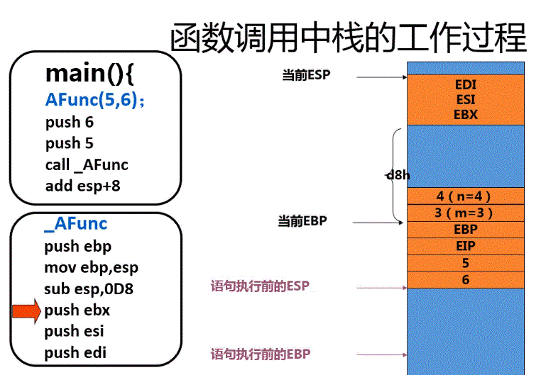

网络渗透与防护之缓冲区溢出介绍
一、前言：
最近在找pwn的学习资料，发现在学校的安全知识库里面，有老师录制的几节缓冲区溢出视频，决定好好学习一下。
二、概念：
1、缓冲区：
缓冲区就是应用程序用来保存用户输入的数据、临时数据的内存空间
2、缓冲区溢出：
如果用户输入的数据长度超出了程序为其分配的内存空间，这些数据就会覆盖程序为其它数据分配的内存空间，形成缓冲区溢出。
3、利用：
人为利用一出来执行代码（shellcode）,从而获得习题的控制权
例如：
通过制造缓冲区溢出使得程序运行一个用户shell,再通过shell执行其他命令，
如果该shell程序属于root（或者system）权限的话，攻击者可以对系统进行任意的操作。
三、程序在内存中的映像

1、内存有三个部分，分别是堆栈段、数据段和文本（代码）段。
2、内存从上往下，从内存低地址到内存高地址，呈现递增的方向。
3、在堆栈段中，具有三部分，自上往下分别是：堆、函数所使用的局部变量所需要的的缓冲区和栈。
4、堆的增长方向是自上而下，由内存低地址向内存高地址增长。
5、栈的增长方向是自下而上，由内存高地址向内存低地址增长。
6、缓冲区溢出的原理主要是利用了栈的溢出。
7、数据段有两部分，分为非初始化数据段和初始化数据段。
8、文本（代码）段分为代码段、系统DLL、PEB&TEB和内核数据代码。
四、栈：
1、概念：
栈是一块连续的内存空间。
2、特点：
1）先入后出：
数据首先压入栈的最后才弹出，以此类推。
2）增长方向：
栈增长方向和内存增长方向相反。内存自上而下，栈自下而上。
3）一个函数或一个线程有各自的一个栈，提供临时存放数据的区域。这个区域称为缓冲区。
3、操作：对栈的操作
1）使用POP指令将数据压入栈中
2）使用PUSH指令将数据从栈中弹出来。
4、指针：
1）CPU中有两个重要的指针，一个叫ESP，另一个叫EBP。
2）ESP寄存器指向栈顶。
3）EBP寄存器指向栈底。
5、栈中内容：缓冲区
1）函数的参数：
当调用某个函数的时候，会把该函数所需要的参数压入栈中。
2）函数的返回地址：
当函数结束的时候，返回到调用函数前要执行的下一条指令的地址。
3）EBP（栈底指针）的值：
4）一些通用寄存器（EDI,ESI,等）的值
5）当前正在指向函数的局部变量：
五、CPU中的三个重要寄存器：ESP、EBP、EIP
1、ESP：栈顶指针
随着数据入栈、出栈而发生变化。
2、EBP：基地址指针或栈底指针
用于标识栈中一个相对稳定的位置。
通过EBP可以方便地引用函数参数以及局部变量
3、EIP：指令寄存器
在将某个函数的栈帧压入栈时，其中就包含当前的EIP值，
即函数调用返回下一个执行语句的地址。
缓冲区溢出就是要将EIP的值改为shellcode的值。
六、函数的调用过程：
1、将参数压入栈。
2、保存指令寄存器中（EIP）的内容，作为返回地址。
3、放入堆栈当前的基地址寄存器（EBP）
4、把当前的栈指针（ESP）拷贝到基地址寄存器（EBP），作为新的基地址。
5、为本地变量留出一定的空间，把ESP减去适当的数值。
七、函数调用中栈的工作过程：
1、调用函数前，压入栈：
1）上级函数传给A函数的参数
2）返回地址EIP
3）当前的EBP
4）函数的局部变量（缓冲区）
2、调用函数后：
1）恢复EBP
2）恢复EIP
3）局部2变量不作处理
八、调用例子：
1、代码：
int AFunc(int i , int j)
{
int m = 3;
int n = 4;
m = i;
n = j;
return 8;
}
int main()
{
AFunc(5,6);
return 0;
}
2、解释：
(1)进入：

（2）退出：

（3）解释：
int AFunc(int i , int j)
{
int m = 3;
int n = 4;
m = i;
n = j;
return 8;
}
int main()
{
AFunc(5,6);
return 0;
}
3、利用：
（1）利用思路：

覆盖EIP值（函数被调用后恢复到main()函数的下一条的指令）
（2）shellcode:

功能：安装木马，提示权限，添加用户和组，开启远程shell，下载。
#include <stdio.h>
#include <string.h>
#define PASS_WORD "1234567"
int verify_password(char * password)
{
int authentitated;
char buffer[8];
authentitated = strcmp(password,PASS_WORD);
strcpy(buffer,password);
return authentitated;
}
int main()
{
int valid_flag = 0;
char password[1024] = {0};
while (1)
{
printf("please input password:");
scanf("%s",password);
valid_flag = verify_password(password);
if(valid_flag)
{
printf("incorrect password!\r\n");
}
else
{
printf("Congratulation ! you have passed the verification !\r\n");
}
}
return 0;
}
1）main函数输入password，调用verify_password函数验证输入的password是否等于1234567，相等返回0，否则返回1。
2）strcpy函数存在漏洞和buffer[8]，构造利用条件。
3）利用缓冲区溢出，修改值，返回0，完成验证。
思路：在verify_password栈帧中
----------------- | buffer | ----------------- | authenticated | ----------------- | EBP | -----------------
authenticated位于buffer[8]的下方。
authenticated是int型，在内存中占4个字节。
buffer[8]占8个字节。
控制buffer[]填满8个字节，然后越界1个字节，缓冲区溢出，使得原authenticated的1覆盖为0，返回通过。
6、例子C:修改函数返回地址
控制buffer[8]越界，覆盖其他值，修改eip。